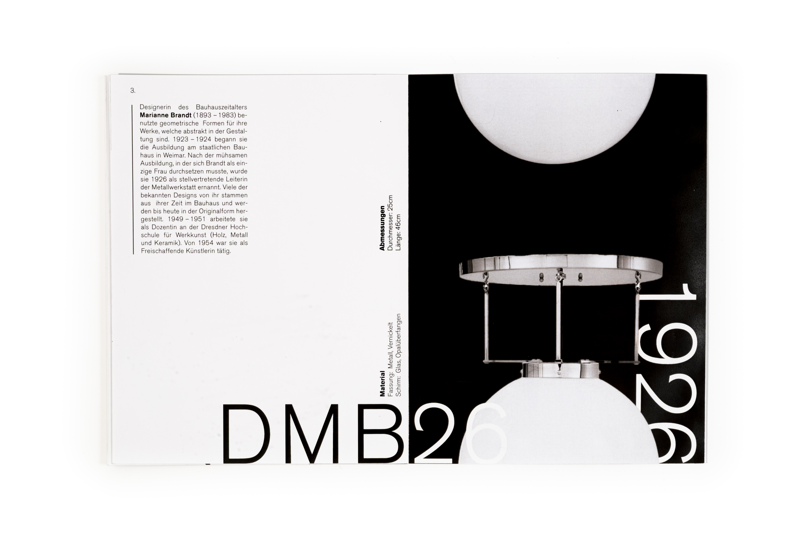
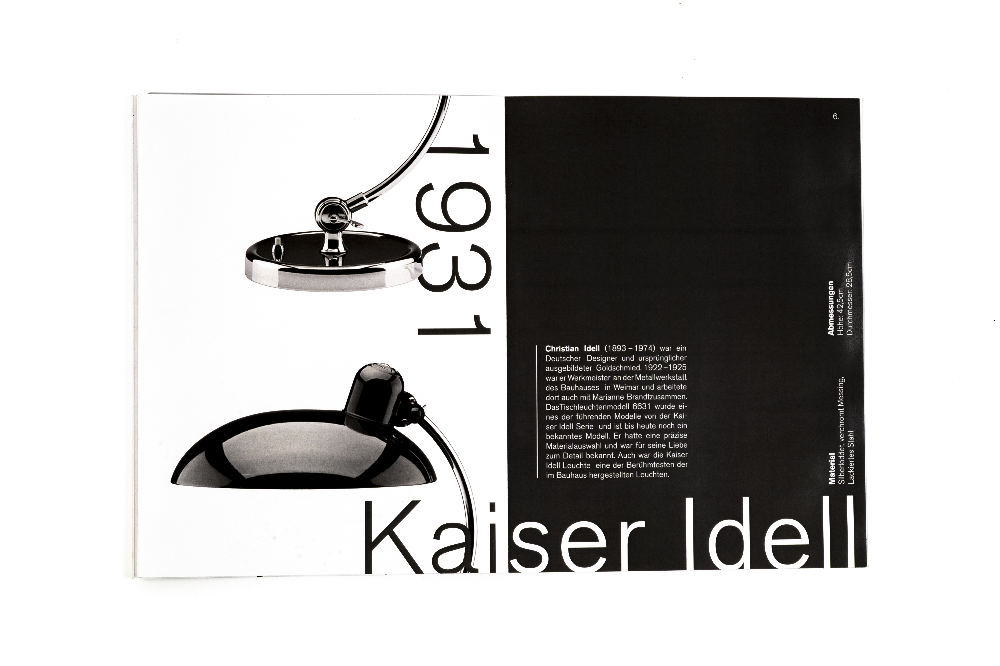
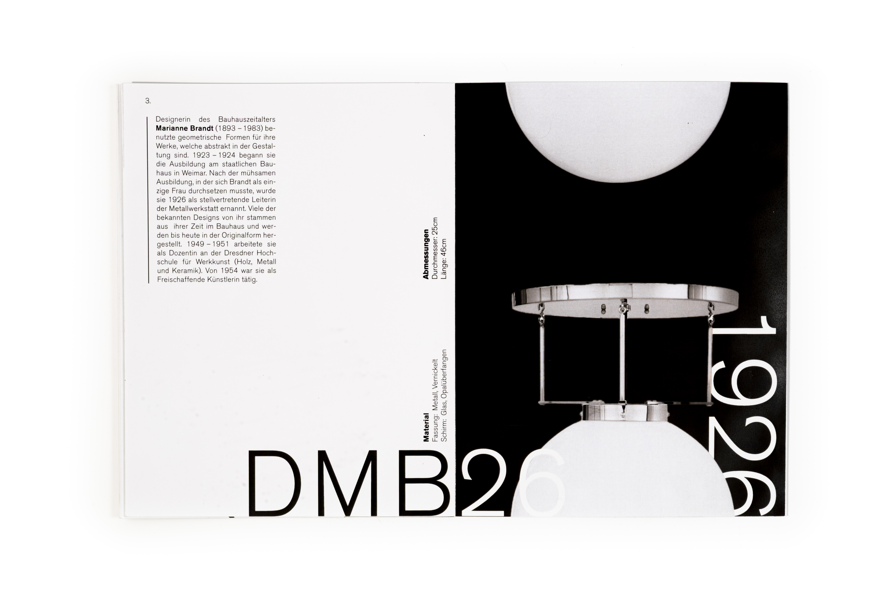
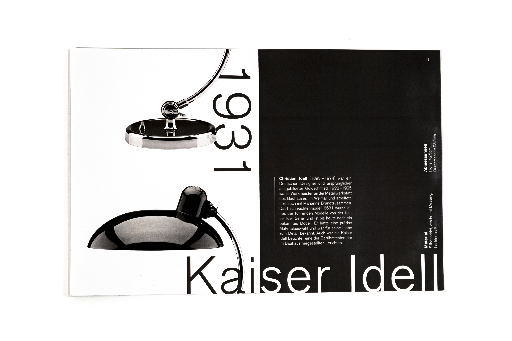

Lampen und Weissräume
Beim folgenden Projekt wurde der Umgang mit Form, Weissraum, Format, Text und Farbe als gestalterische Einheit untersucht. Diese entwickelte Gestaltung wurde anschliessend in ein Leporello übertragen, das sowohl als Einzelseiten, als auch als zusammenhängendes Buch funktioniert. Die Anordnung der Bilder im Leporello folgt einem klaren Muster: Jeder Anschnitt der Lampenbilder orientiert sich an den unteren und oberen Seitenrändern, wodurch ein rhythmischer Aufbau im Layout entsteht. Durch das gesamte Leporello hindurch wechseln sich die Ausrichtungen der Lampen ab. Die weisse Lampe erscheint auf schwarzem Hintergrund, während die beiden anderen Lampen auf weissem Hintergurnd dargestellt sind. So entsteht ein beständiger Kontrast, der dem Layout einen harmonischen Fluss verleiht. Je nach Perspektive zeigt das Leporello überweigend weisse oder schwarze Flächen – seine Wirkung verändert sich mit der Perspektive des Betrachtenden.